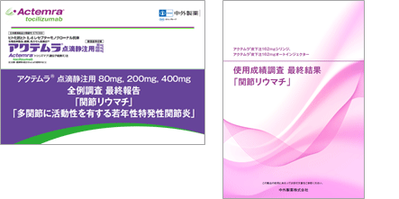
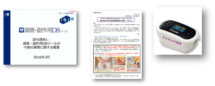

5. KEVの安全性はACTと同等？

- ・1309試験およびASCERTAIN試験から安全性はACTと同等としていますが、限られた例数での比較でしかなく、当然ながら日本人での大規模な安全性データもKEVは有しておりません。一方、ACTには7,901例の全例調査結果および3年間の長期フォローデータ、1,000例超のSC-PMSデータやテキストマイニングによる感染症前駆症状データ、海外での安全性データ等に加えて、日本の先生方と歩んできた10年間の歴史があります。
- ・豊富なデータ以外にもACTはIL-6シグナル伝達阻害下における感染症早期発見のためビリーブプログラムを用意し、安全管理が必要な患者さんにパルスオキシメータをご利用頂いています。また、豊富なデータに基づく積極的な安全性データの開示も行っています。
日本での豊富な安全性データ

適正使用推進に向けた活動

アクテムラはIL-6治療のパイオニアとしての豊富な安全性データを有し、活動も展開